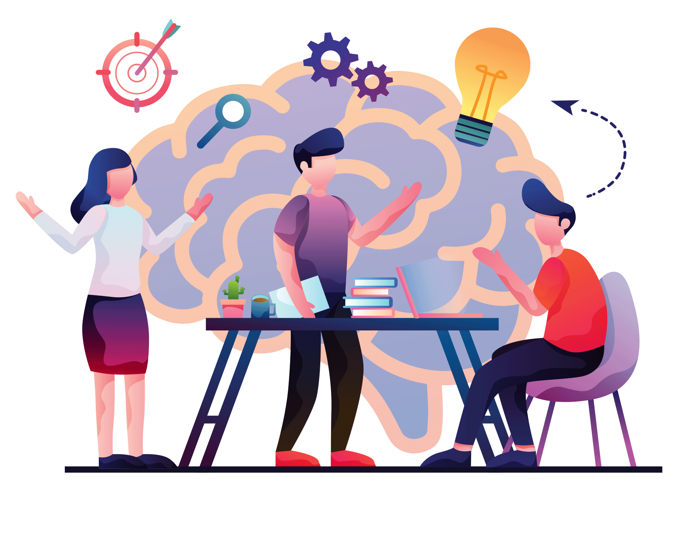
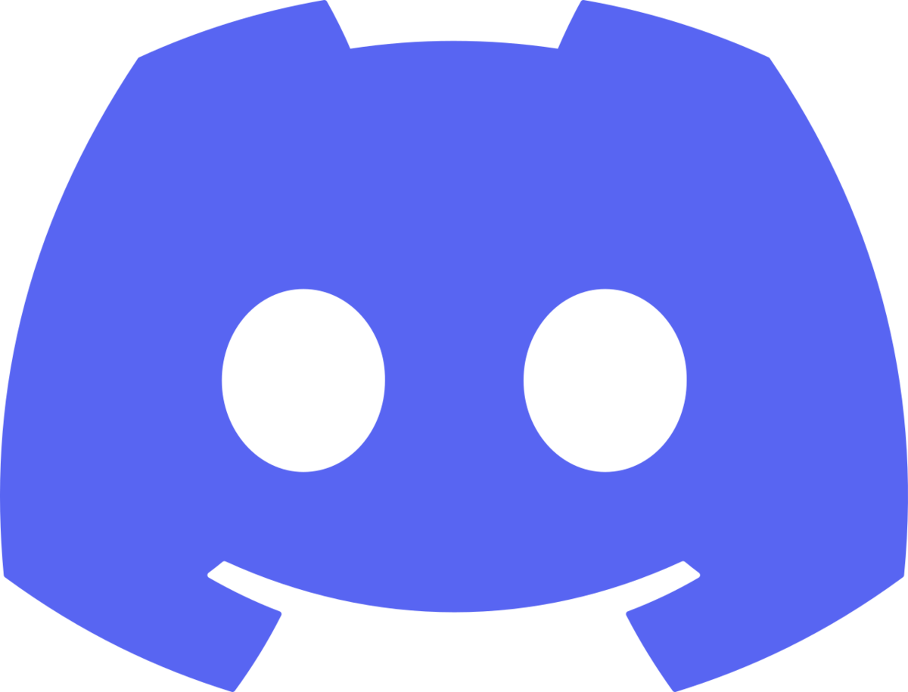
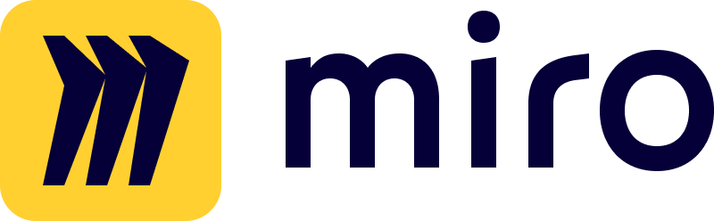

|
Afin de mettre en place le projet, nous avons choisi de maintenir un rythme d’environ une réunion des 3 membres de l’équipe par semaine. Les réunions de l’équipe se déroulent généralement en distanciel via l’application Discord. Durant celles-ci, nous exprimons nos différentes idées et nous nous répartissons les différentes tâches à effectuer pour la réunion suivante. Notons tout de même que les tâches les plus importantes sont réalisées durant la réunion par l'entièreté de l’équipe. |
 |
Les réunions avec le chef de projet se déroulent si possible en présentiel. Elles nous permettent de partager nos avancées sur le projet mais surtout d’avoir des retours sur les différentes idées mises en place.
Vers la moitié du projet, nous avons mis en place un planning afin de prévoir l’évolution de notre projet jusqu’à la fin. Celui-ci se décompose en trois grandes parties et se présente de la façon suivante.
Les différents brainstorming de l’équipe se font sur l’application miro.
|  |
|
|
 |